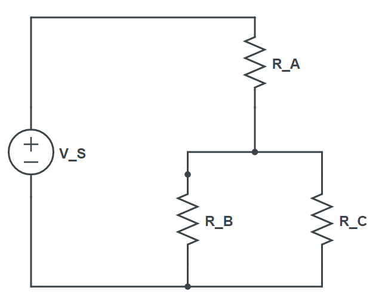
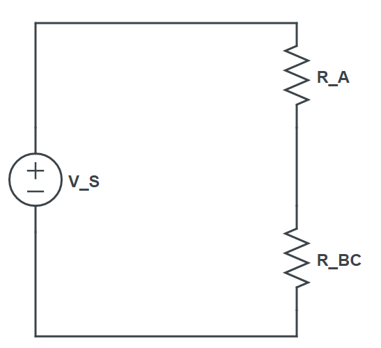

Ohm's Law says that the current through a resistor is directly proportional to the applied voltage: \[V=I\times R\]
Commonly, voltage and resistance are defined and we are computing the current: \[I=\frac{V}{R}\]
Voltage:eqn
Power is the product of voltage and current: \[P=V\times I\]
Voltage:eqn
The next section uses the following DC circuit and an intermediate step for showing an \(R_{EQ}\):
 Computing an equivalent resistance helps to quickly simplify circuit analysis:
Resistors in parallel add conductivity together (the inverse of resistance's ohm \( \Omega \) is conductivity's mho \( \mho \)):
eqn
Resistors in series add resistance together:
eqn
For good practice, we'll wait until the final equivalent resistance before using the term \(R_{EQ}\) as it is the value that the voltage source will see as a single resistor. From Ohm's Law, the source current is:
eqn
The source current will travel through \(R_A\) and then split between parallel resistors \(R_B\) and \(R_C\) according to the current divider (be careful with the 2-resistor current divider equation, the resistance value in the numerator is of the *other* resistor!):
eqn
eqn
Verifying the current divider by finding each device's voltage will also demonstrate how the ratio of current is inversely proportional to the resistance ratio:
eqn
eqn
A voltage divider can only be applied where the resistors are in series. Only after combining \(R_B\) and \(R_C\) into \(R_{BC}\), as shown in the right-most diagram, are the resistors in series. The voltage divider provides a shortcut by not computing current values:
eqn
Kirchhoff's Voltage Law states that over any loop in a circuit, the net voltage change is zero: \[\sum^{}_{loop}\Delta V=0 \text{ or: } \sum^{}_{loop}\Delta V_{up}=\sum^{}_{loop}\Delta V_{down}\] From the circuit above a KVL expression \(V_S=V_A+V_B\) could be used to find \(V_A\):
eqn
Kirchhoff's Current Law states that for any node in a circuit, the net current flow is zero: \[\sum^{}_{node}I=0 \text{ or: } \sum^{}_{node}I_{in}=\sum^{}_{node}I_{out} \] In the above circuit, we could use the KCL expression \(I_B+I_C=I_S\) to verify our results:
eqn
The generic form of an AC voltage signal (composed of a DC bias and one cosine) is: \[v_s(t)=V_{B}+V_{m}cos(360^\circ f t+\phi)V\] Where \(V_B\) is the Bias (or DC component). \(V_m\) is the Magnitude. \(\phi\) is the Phase shift. \(f\) is the Frequency and can be derived from the signal's period \(T\) by the relationship: \[f=\frac{1}{T}\] For example, the period: correlates to the frequency:
eqn
We can start with a graph of a cosine and derive the terms \(V_B, V_m,\) and \(f\).eqn
The bias \(V_B\) is the average value:eqn
The AC voltage signal is:eqn
The RMS-value of the AC voltage is:eqn
The AC current equation can be found using Ohm's law and \(v_s(t)\):eqn
The RMS-value of the AC current is:eqn
You can use functions of time, or RMS values, with Ohm's Law, KVL, KCL, and the current and voltage dividers. For example, after finding \(V_{S,RMS}\), finding \(I_{S,RMS}\) from \(R_{EQ}\) is trivial:eqn
RMS (Root-Mean-Squared) Voltage and Current values are used to compute average power. \[P_{AVE}=I_{RMS}V_{RMS}=I_{RMS}^2 R=\frac{V_{RMS}^2}{R}\] Average Power from the example:eqn
Converting \(v_s(t)\) into \(V_{S,RMS}\) (or \(i_s(t)\) into \(I_{S,RMS}\)) is a clever way of accomplishing the calculus as the first step and it removes the variable \(t\) as well as abstracting a complex signal into a single value. We'll see the steps and how the RMS equation forms. Instead of using \(360^\circ\) we'll use \(2\pi\). To compute an average of a periodic function, integrate that function over one cycle and then divide by its width: \[P_{AVE}=\frac{1}{T}\int_{0}^{T} p(t) \,dt = \frac{1}{T}\int_{0}^{T} v(t)i(t) \,dt \] \[ =\frac{1}{T}\int_{0}^{T} [V_B+V_m cos(2\pi f t+\phi)]\times [I_B+I_m cos(2\pi f t+\phi)] \,dt \] \[ =\frac{1}{T}\int_{0}^{T} V_B I_B + (V_m I_B + V_B I_m ) cos(2\pi f t+\phi)+ V_m I_m cos^2(2\pi f t+\phi) \,dt \] \[ =\frac{1}{T}\int_{0}^{T} V_B I_B + (V_m I_B + V_B I_m ) cos(2\pi f t+\phi)+ \frac{V_m I_m}{2}+\frac{V_mI_m}{2}cos(4\pi f t+2\phi) \,dt \] \[ =\frac{1}{T}\int_{0}^{T} V_B I_B + \frac{V_m I_m}{2} + (V_m I_B + V_B I_m ) cos(2\pi f t+\phi)+\frac{V_mI_m}{2}cos(4\pi f t+2\phi) \,dt \] \[ =\frac{1}{T}[V_B I_B t + \frac{V_m I_m}{2}t + \frac{V_mI_B + V_BI_m}{2\pi f}sin(2\pi f t+\phi)+ \frac{V_mI_m}{2\times4\pi f}sin(4\pi f t+2\phi)]\Big|_0^T \] \[ = V_BI_B+\frac{V_mI_m}{2}\]eqn
eqn
To create the "Polar" form, we replace the \(e^j\) with the "∠" symbol (for now, it is this simple).eqn
Adding complex values is most easily done with the Rectangular form. Add the terms piece-wise: Real with Real and Imaginary with Imaginary: \[Re_1+jIm_1+Re_2+jIm_2=Re_1+Re_2+j[Im_1+Im_2]\] Rectangular multiplication isn't very convenient, but it can be done (FOIL): \[(Re_1+jIm_1)\times(Re_2+jIm_2)=Re_1\times Re_2 - (Im_1\times Im_2)+ j(Re_1\times Im_2+Re_2\times Im_1)\] Rectangular division requires the use of the Complex Conjugate to rationalize the denominator and then distribute the division: (The Complex Conjugate of \([Re+jIm]\) is \([Re-jIm]\)) \[\frac{Re_1+jIm_1}{Re_2+jIm_2}=\frac{(Re_1+jIm_1)}{(Re_2+jIm_2)}\times\frac{(Re_2-jIm_2)}{(Re_2-jIm_2)}= \frac{(Re_1\times Re_2 + Im_1\times Im_2)+ j(Re_2\times Im_1-Re_1\times Im_2)}{Re_2^2+Im_2^2}= \frac{Re_1\times Re_2 + Im_1\times Im_2}{Re_2^2+Im_2^2}+j\frac{Re_2\times Im_1-Re_1\times Im_2}{Re_2^2+Im_2^2}\] Multiplication is much easier in Exponential and Polar forms: \[A_1e^{j\theta_1}\times A_2e^{j\theta_2}=A_1\times A_2e^{j(\theta_1+\theta_2)}\text{ and }\frac{A_1e^{j\theta_1}}{A_2e^{j\theta_2}}=\frac{A_1}{A_2}e^{j(\theta_1-\theta_2)}\] \[A_1\angle\theta_1 \times A_2\angle \theta_2=A_1\times A_2\angle \theta_1+\theta_2\ \text{ and }\frac{A_1\angle\theta_1}{A_2\angle\theta_2}=\frac{A_1}{A_2}\angle\theta_1-\theta_2\] To go from "Rectangular" to "Polar" use the Pythagorean Theorem for magnitude \(A=\sqrt{Real^2+Imag^2}\) and an arctangent function to obtain the angle that satisfies \(tan(\theta)=\frac{Imag}{Real}\). Beware: the computation \(\theta=tan^{-1}(\frac{Imag}{Real})\) is only correct in quadrants I and IV. Use \(atan2\) or a calculator's complex phasor functionality to correctly compute angles when the complex number is in Quadrants II and III. If you must use \(tan^{-1}\) add \(180^{\circ}\) to the result whenever the real component is negative. Then, whenever \(\phi\) exceeds \(180^{\circ}\) subtract \(360^{\circ}\) (I won't show this final step -- your efforts are better spent learning how to have your calculator provide phase in a single step).eqn
eqn
eqn
eqn
eqn
eqn
eqn
Our passive circuit components are the resistor (R), inductor (L), and capacitor (C). Using the same form as Ohm's Law, we introduce the concept of impedance which quantifies the relationship between \(V\) and \(I\) in the term \(Z\), a complex number.
\[\text{Resistor: }v_R(t)=i(t)R\rightarrow Z_R=R\] \[\text{Inductor: }v_L(t)=L\frac{di}{dt}\rightarrow Z_L=j\omega L\] \[\text{Capacitor: }i_C(t)=C\frac{dv}{dt}\rightarrow Z_C=\frac{1}{j\omega C}\] \[\text{where: }\omega=2\pi f\] Let's see what kind of impedance values that typical inductors and capacitors take on with different frequencies:eqn
eqn
eqn
Let's build a circuit using your values and plot \(v_s(t)\) and \(i_s(t)\). Choose a topology:
Zeq eqn
Veqn
Ieqn
Current per grid square Time per grid squareCombinations of Resistors, Capacitors, and Inductors can be used as filters based upon their frequency response. We will consider the source to the input, and one of the components will be the output. Thus the filter's behavior at any single frequency can be computed using a ratio of the output voltage to the input voltage as such:
\[Gain=\frac{V_o}{V_i}\]FilterGain
FilterGainFinish
And plot this Gain over a range of frequencies (both axes on logarithmic scale):Compute K
Compute B
Test the interface with a specific voltage \(V_{In}\):Compute Vout
Finish designing the ADC by defining \(b\):Compute DV
Compute ELandQL
Compute QE
Now let's specify a sensor as a function of time and watch how it is sampled, quantized, encoded, and then recreated over a 1-second time period. The vertical range of each graph is determined by the transducer interface design from above.binary
An ADC's bit rate is the product of its sample rate and its sample size.bitrate
It should be emphasized that the prefixes for magnitude (such as \(k\), \(M\), or \(G\)) in the context of bit rates are their powers of 10 (that is, \(10^3\), \(10^6\), \(10^9\)). This is \(not\) true for memory sizes. Memory size prefixes will be powers of 2 as in:\[1KB = 2^{10}B\] \[1MB = 2^{20}B\] \[1GB=2^{30}B\] \[1TB=2^{40}B\] You might also notice \(KB\) uses a capitalized \(K\).The following expression will guide how to arrange solutions to memory size questions:
\[Data Rate=\frac{Memory}{Time}\] For example, let's solve for \(Time\) given the previous bit rate and the following memory size:solve for T
If the result is large enough, convert to minutes or even seconds. It is fine to use decimal minutes (as opposed to the English MM:SS).solve for bit rate
solve for memory
Here are modulation index \(\alpha\) and modulation efficiency \(\eta\) for the following example system:
The wavelength of a radio transmission can be computed using the speed of light \(c\) and the radio frequency \(f\):
Frequency:eqn
The gain \(G\) of a parabolic dish antenna of radius \(r\), efficiency \(\eta\), and wavelength \(\lambda\): \[G={(2\pi r)^2\over \lambda^2}\eta\]
The monopole antenna achieves an ideal gain \(G=3.24\) at it's ideal length, one-quarter wavelength: \(L={\lambda \over 4}\)
The dipole antenna achieves an ideal gain \(G=1.64\) at it's ideal length, one-half wavelength: \(L={\lambda \over 2}\)
Transmitter:The Friis equation for propagation computes power received \(P_R\) based upon power transmitted \(P_T\), transmitter gain \(G_T\), receiver gain \(G_R\), wavelength \(\lambda\), and range \(R\).
Range, \(R\) =
Transmitter Power, \(P_T\) =
eqn
Often, it is necessary to solve for a maximum range \(R_{Max}\) (which we'll name \(R_{Friis}\)) based upon a minimum receive power \(P_{Rmin}\).
Minimum Receive Power, \(P_{Rmin}\) =eqn
For a given height \(h\) in feet, the radio-distance to the horizon \(R_{LOS}\) is computed in miles: \(R_{LOS}=\sqrt{2h}\). But when both Tx and Rx are elevated: \(R_{LOS}=\sqrt{2h_1}+\sqrt{2h_2}\)
Transmitter height above ground: ft. Distance to horizon is: 0 miles, 0 km.eqn
eqn
eqn
To solve for a maximum RADAR range \(R_{Max}\) (which we'll name \(R_{Radar}\)) based upon a minimum receive power \(P_{Rmin}\).eqn
Another important parameter of a basic RADAR system is the Pulse Repetition Frequency \(PRF\) which quantifies how often pulses are transmitted. The reciprocal of the \(PRF\) is the Pulse Reptition Interval \(PRI\). During the \(PRI\), the RADAR system is running a timer that associates returns with a distance according to the 2-way Range equation \(R=\frac{c t}{2}\). At the end of the \(PRI\) a new pulse is sent out and the timer is reset to \(0\). Very distant targets will thus cause returns to occur in a later \(PRI\) window and lead to an "ambiguous" range reading. The maximum "unambiguous" range, \(R_{U}\) is the range reading when the round-trip travel time to a target and back is equal to the \(PRI\).eqn
The critical separation distance that quantifies a RADAR's ability to resolve two targets, Range Resolution, \(\Delta R\) depends upon the duration of the RADAR pulse, \(\tau\).eqn
A RADAR Warning Receiver (RWR) is a radio receiver tuned to the RADAR's frequency, and can normally detect the RADAR system if enough power reaches the RWR antenna. This is a one-way path that is evaluated with the Friis equation, where \(G_T\) is the RADAR antenna gain, and \(G_R\) is the RWR receiver gain. Normally, we'll compute a maximum range for the sake of comparison with other range-based metrics. To avoid confusion with other values of \(R_{Max}\), we'll name this value \(R_{RWR}\).eqn
Both propagations, 2-way and 1-way, are limited to line-of-sight, so we'll compute \(R_{LOS}\).eqn
In determining "Who sees whom first?" the choice is somewhat involved. You may draw a picture or use the following concept: that we are finding which propagation case is less-limited. Separately, we'll check the final RADAR detection range against RU for ambiguous returns.\[ Max\begin{cases} Radar= & Min(R_{LOS},R_{Radar}) \\ RWR= & Min(R_{LOS},R_{RWR}) \end{cases} \]
Min-Max
**The computations for \(R_{MAX}\) only help to determine whether a RADAR could detect a target. Actual range-finding is done by using the pulse's round-trip travel time and its known speed, \(c\).
2-way travel time: \(t\) =eqn
Of course, if you are measuring the time from just transmitter to receiver, do not divide by 2.
1-way travel time: \(t\) =eqn
The Doppler effect is used to find a target's velocity. When the target is moving towards a RADAR, velocity is positive and the return frequency increases. When the target is moving away from a RADAR, return frequency will decrease. The sign can be entered as a negative velocity, by placing a '-' in place of \(\pm\)), or using a value of \(\theta\) that makes \(cos(\theta)\) negative. Choose one method.
Frequency (original), \(f_0\) =eqn
eqn
In practice, a RADAR system will be used to compute velocity from the Doppler shift:eqntocomputevelocity
These Doppler equations disregard relativity and will be increasingly inaccurate at very high velocities.